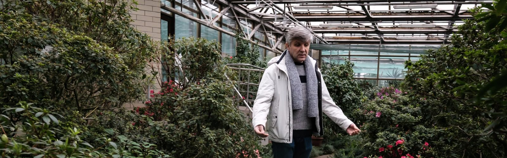
How the Botanical Garden Works During the War
20.03.23
The Hryshko National Botanical Garden is known to Kyiv residents as a place for walks and photo shoots against the background of flowering magnolias. However, it is actually a research institute of the National Academy of Sciences of Ukraine, where scientific work is conducted, and valuable collections are stored. For example, the collection of tropical and subtropical plants of the botanical garden has the status of the National Heritage of Ukraine. Located in glass greenhouses, tropical plants suffer from the effects of war — lack of heating and rotational power outages. Scientists have already lost several valuable specimens and fear that even more plants could die by the end of winter.
We came to the botanical garden on one of the gloomy, cool days at the end of January. There was no visitor on the property except, perhaps, for an elderly man on a walk with a dog. At the greenhouse — a large pentagonal dome located at the foot of the main stairs — we were met by Roman Ivannikov, a leading researcher in the department of tropical and subtropical plants. He has been working in the botanical garden since 1996 — since graduating from the Department of Plant Physiology at Taras Shevchenko University of Kyiv.
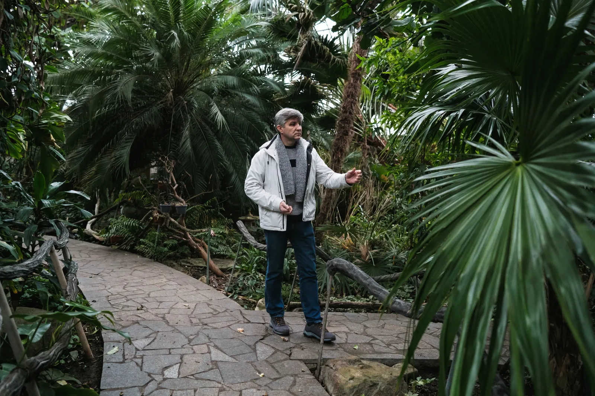
The main greenhouse, where we start the conversation, is like a small tropical forest. It is damp, quiet, and easy to breathe there. On an area of 1,000 square meters, about 800 species of tropical plants from all over the world are collected: from Africa, North and South America, Australia and Asia, as well as from the greenhouses of European breeders. The collection was started in the 30s, but the main development of the greenhouse complex took place after the end of World War II. Back then, scientists made round-the-world voyages and collected a variety of plants. In one such expedition, which could last up to a year, scientists acquired a collection of azaleas in post-war Germany, from another they brought rare species of orchids from Madagascar.
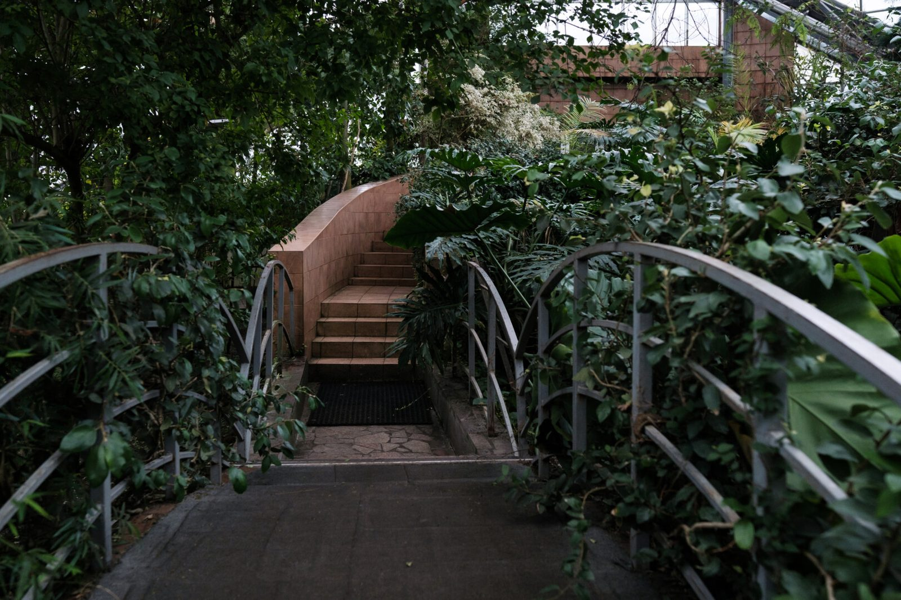
There are almost no such expeditions nowadays. Firstly, it's expensive. Secondly, countries have realized that even an inconspicuous plant can have undiscovered valuable properties that will bring millions in profits, so they are in no hurry to share them. For example, in Asia, studies of [1] immunostimulatory properties of some species of orchids are conducted. Currently, scientists have results in experiments on rats. Mr. Ivannikov says that the laboratory of plant biotechnology of the botanical garden would also be able to build up a large mass of potentially useful plants and even manage the synthesis process to increase the concentration of active substances. But usually, not enough money is allocated for such projects.
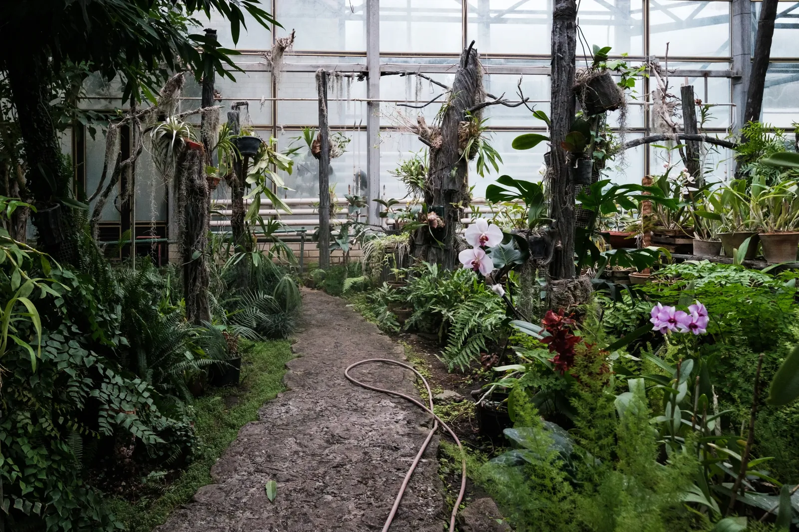
Orchids are the main specialization of Mr. Ivannikov. He speaks of them with great admiration. In particular, he talks about a large-scale project, which the staff of the botanical garden worked on in the late nineties. Back then, together with Tetiana Cherevchenko, the former head of the botanical garden, they dreamed that an orchid would grow in the apartment of every Ukrainian. They developed methodological recommendations, identified appropriate non-demanding varieties, such as phalaenopsis, and transferred plant material to flower farms. But it did not go further; again, there was no funding. Now, Phalaenopsis orchids can really be bought at any store, but they are brought from Germany or Poland.
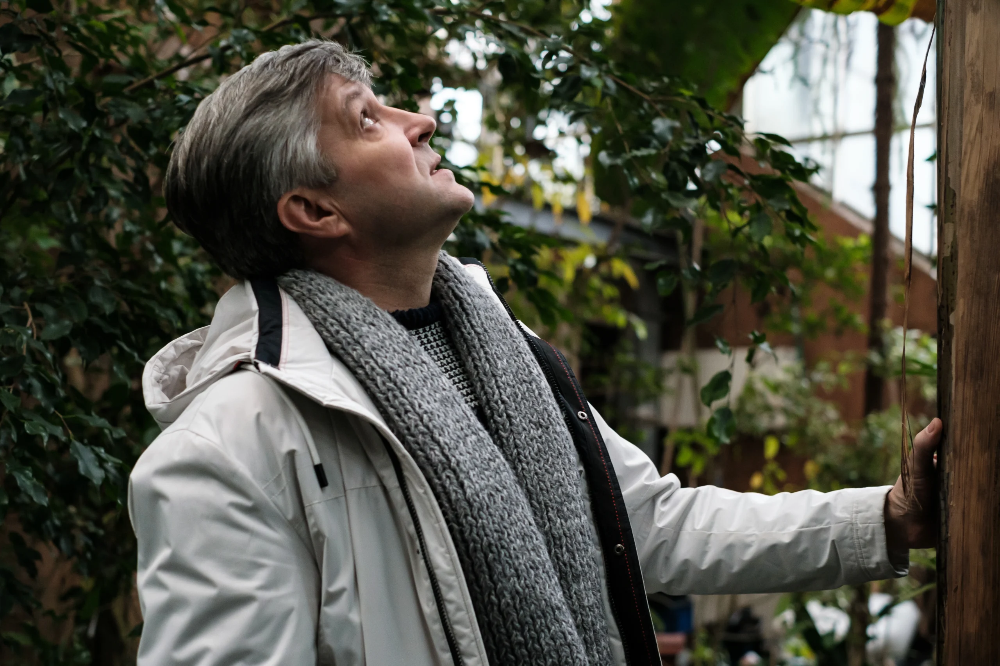
The department of tropical and subtropical plants employs 23 people, 10 of them are researchers. This is very few for such a large institution, but scientists continue to work despite difficult conditions. Not so long ago, they completed a project with the Institute of Tropical Biology of Vietnam, within which Ukrainian specialists handed over 40 species of orchids to Vietnamese colleagues. These orchids once grew in Vietnam, but were exterminated to create coffee and banana plantations. Now the Vietnamese authorities are trying to restore their tropical flora and seek help from seemingly unexpected places — Ukrainian greenhouses in the temperate zone. But this once again emphasizes that any botanical garden is a reservoir for the preservation of unique plants and can help reintegrate them into nature.
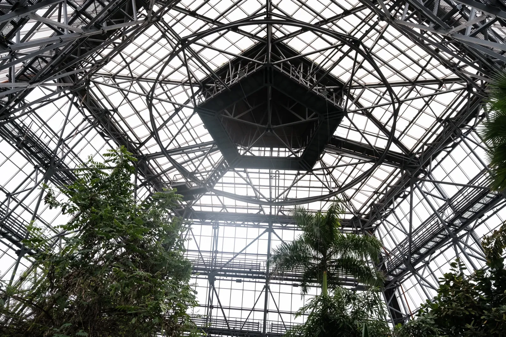
During our conversation, water is constantly dripping from the roof. The glass roof of the greenhouse is a stunning construction with a height of 30 meters. It was created in Soviet times and needs major modernization today. Drops that break off from above are condensate that is formed due to a temperature difference. There can be no such thing in a modern greenhouse. In addition, the roof design does not provide for natural ventilation. In other words, you can't open a window here. For air circulation, powerful air conditioners are installed here, which consume a lot of electricity. “If we use them,” says Mr. Ivannikov, “we cannot make ends meet.”
Power outages greatly affected the greenhouse. After the appeal of the staff, the botanical garden was included in the list of critical infrastructure of the city of Kyiv, but despite this, the outages did not stop. Without power supply, the pumps installed in the heating plants of the greenhouse stop, and the temperature drops to critical indicators. Mr. Ivannikov says that during this heating season, several cases have already been recorded in the greenhouse when the temperature dropped to 5 degrees, while tropical plants need at least 15 degrees to survive. And for some plants even this temperature is not enough — as of today, among other things, the collection of the botanical garden has lost two twenty-year-old cocoa trees that could not withstand the cold.
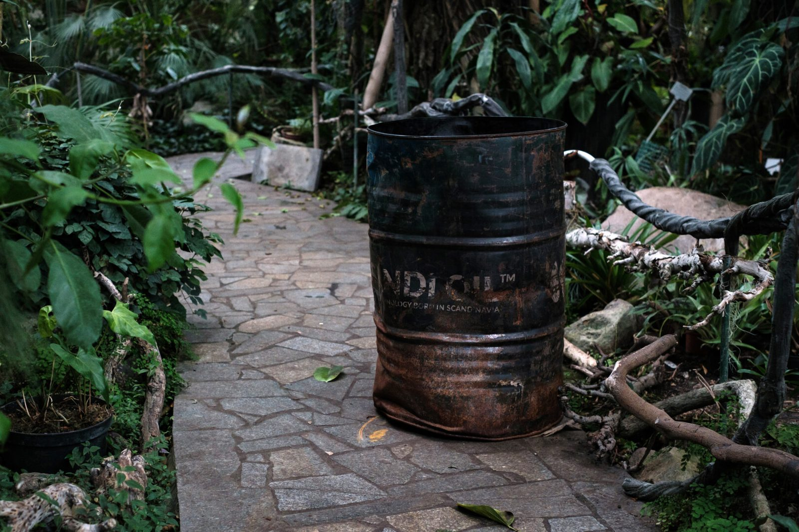
Employees are doing everything possible to save the plants. Here and there are barrels in which they made fires and smoked the greenhouse in the coldest days. Thanks to the support of the community, it is possible to raise funds for the purchase of pellets for the boiler house. Some sponsors helped buy diesel generators and heat pumps for the greenhouse. But even so, the temperature remains at 13 degrees.
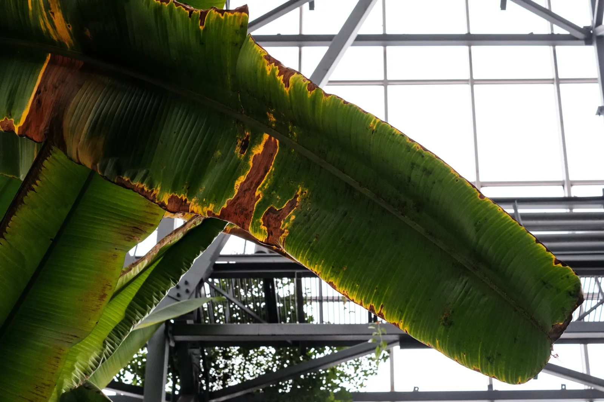
Most plants — palm trees, citrus trees, rhododendrons, bananas — withstand this temperature. But they would be much healthier if they were warmer — there would be no dark spots, withered vines and withered leaves.
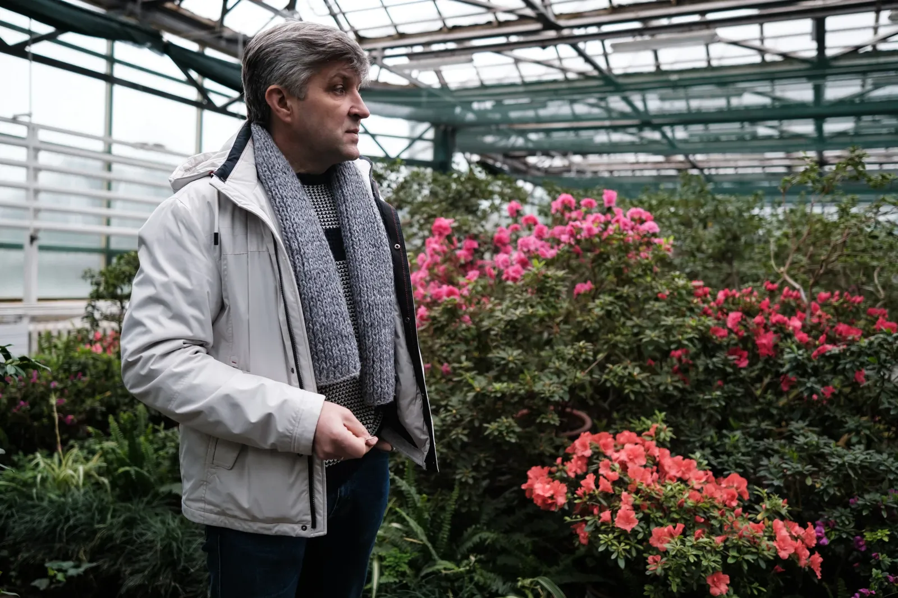
We go to other, smaller greenhouses. In one of them, azaleas and camellias bloom. Mr. Ivannikov says that the botanical garden has a carefully planned course of flowering of plants. In winter, you can see red, pink, and white azaleas, immediately after that magnolias and tulips begin to bloom, followed by lilacs, and then comes the turn of peonies and tulips. So, at any time of the year, the botanical garden has something to please visitors with. Unfortunately, during the war, the number of visitors greatly decreased. Someone left Kyiv, someone came and does not know about such a possibility, and someone simply doesn’t have time. However, the botanical garden is critically dependent on buying tickets, so it encourages everyone to come and get distracted from worries, contemplating flowers.
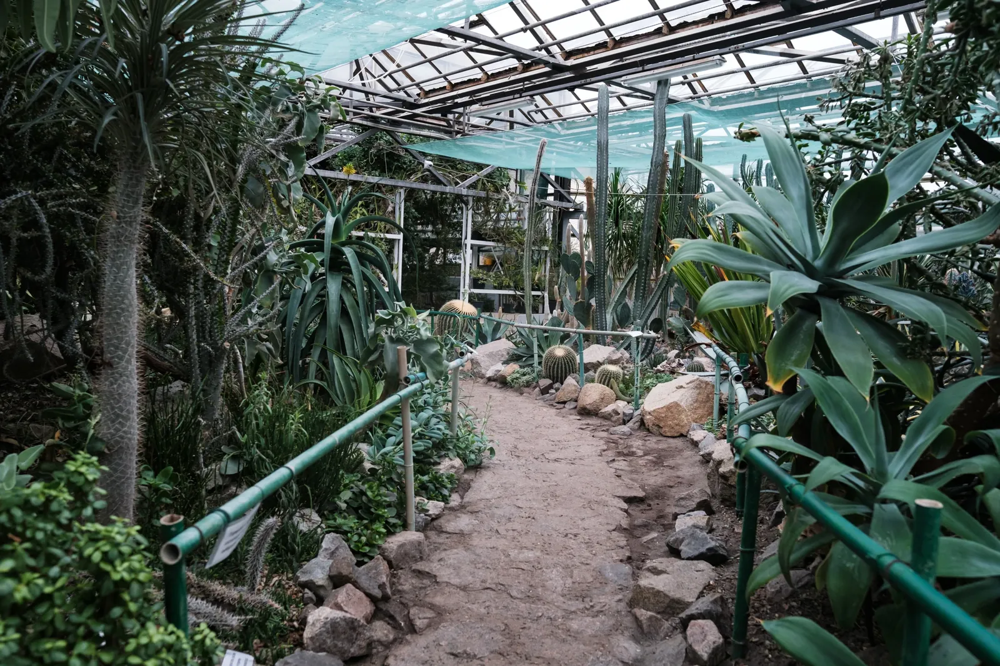
In the next greenhouse, cacti and succulents grow. Right at the entrance you can see huge round specimens of Echinocactus grusonii. They are 70 years old and have grown from a small seed. Further in the greenhouse grow agaves, whose powerful leaves with sharp needles at the ends look like a stone sculpture of a giant spider. This is what tequila is made of. Under the glass ceiling the dry remains of leaves can be seen; last summer, the flower stalk of one of the agaves grew in one night to a height of four meters, broke the glass and blossomed over the roof, gathering a swarm of bees around it. Glass then had to be replaced, and the mother plant died — its life cycle always ends with rapid flowering. Cacti relatively normally tolerate a decrease in temperature, hibernating for this period, but succulents need more moisture and heat than we can provide, says Mr. Ivannikov.
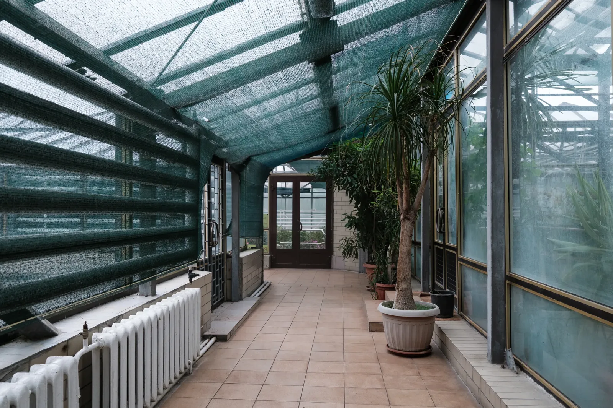
It is even colder in the corridor between the greenhouses — the batteries here are barely warm. In the corner, there is a wardrobe with a collection of seeds, nuts, and cotton. One of the world's largest nuts lies on the shelf — the fruit of the Seychelles palm (Lodoicea maldivica), which can weigh up to 28 kilograms.
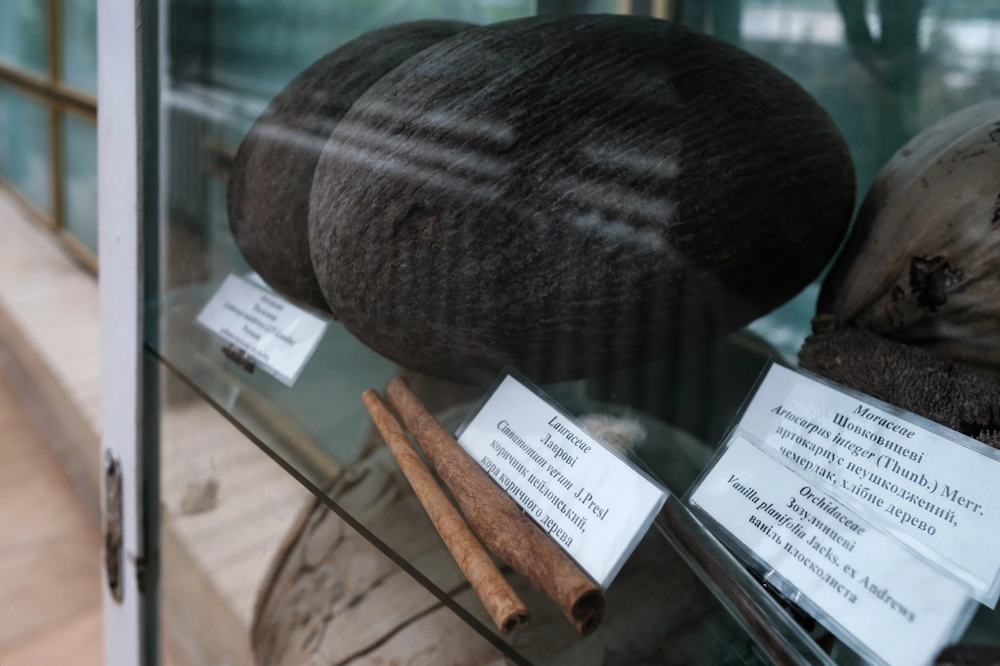
It has its own legend. European sailors of the 16th century sometimes caught these nuts while sailing. Not knowing that the nuts fell into the water from ordinary palm trees, they considered them the fruits of magical marine plants and endowed them with magical properties. The nut has a peculiar shape — it is similar to the female buttocks — so it was believed that it gave the owner male power, and some said that it was the devil seeds. The price of such nuts sometimes exceeded the cost of the ship itself. They were given to jewelers so that the latter put gilding on them and made them into cups, which were then given to the wealthiest nobles and kings. Of course, when they found out their true origin, the nuts lost a little of their mysterious attractiveness, but even now, the price of one is at least USD 300. However, the main value of the Seychelles palm is that it is the center of the island ecosystem, which supports the existence of local insects, geckoі, and other living creatures.
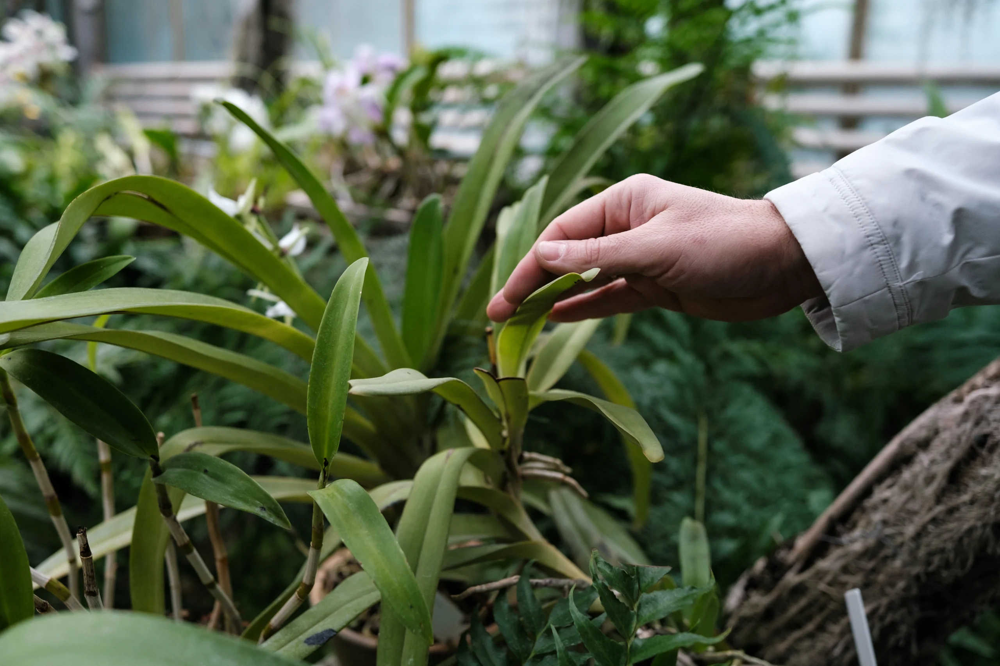
The importance of ecosystem diversity is a topic that Mr. Ivannikov constantly emphasizes. For the functioning of ecosystems, he says, all elements are needed — from a huge oak tree to a small ant. In the last greenhouse, he shows us the Angraecum eburneum orchid, which grows in Madagascar and can only be pollinated by one species of nocturnal butterfly.
For many thousands of years, insects and flowers have existed side by side and built an incredible symbiosis. If one element disappears — a butterfly, an orchid, or the jungles of Madagascar themselves — this connection will also be broken. There are numerous examples of such interactions. Together, they make up the natural balance that man breaks by cutting down forests, draining territories, blocking rivers, or destroying species. Mr. Ivannikov provides the example of the Avatar movie, saying that it shows perfectly how the severance of natural ties can lead to catastrophic consequences. The National Botanical Garden is trying to do the same thing — demonstrate the value of natural balance and diversity of ecosystems — but perhaps James Cameron does it a little bit better.
This report has been developed within the project supported by the Public Affairs Section of the U.S. Embassy in Ukraine. The views of the authors do not necessarily reflect the official position of the U.S. government.